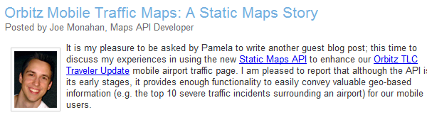

Top Developers¶
It’s important to both know of your top developers, in the sense that you can rattle off a list of them from your head (or perhaps from a mechanized system), and also to know your developers in the sense that you have 1-on-1 contact with them and feel comfortable calling them an acquaintance or even a friend.
Once you know who your top developers are, you can use them to make a better API and a better community. You can ask them for advice about the future of the API (perhaps formally, in a trusted testers forum), and you can sometimes even suggest useful sample code for them to create and give back to the community. But, before you can get to all that, you first need to find out who they are, reach out to them, and reward them.
Developer Types¶
There are different types of top developers, and different places you can find them.
The Forum Posters¶
The most obvious top developers (atleast to someone who spends most of their support time in forums) are the ones that are also the top posters in the forum. They typically have websites hosting sample code, and they respond to questions in the forum with pointers to their own code with the answer. Not only are they great developers, they’re usually also very good at formulating answers in a way that makes sense and actually teaches the querying newbie (instead of just writing the answer for them). They’re the kind of people that you would hire to do your job, if only you ever had the headcount to hire a support army.
To find these top developers, take a look at who the top posters in the forum are and evaluate the quality of their responses. It’s simple to see who the top posters are in most forums. In Google Groups, you can click “About this Group” and see the top posters of all-time and also the top posters of the month. The top posters of the month is useful for seeing who’s the most active in recent times - and perhaps to find up-and-coming top posters, and to nurture them, and the top posters of all-time is useful for seeing who has stuck by the API through the ages, and will be your rocks. Try to also find those developers that may not post often, but when they do, it’s on a topic that noone else understands and they give very lucid answers. It’s not easy to programmatically find this sort - it requires actually seeing posts in the forum, and paying attention when you see a very helpful post attributed to an infrequent poster.
The Article Writers¶
Some developers also have been blessed with the skill (and desire) for technical writing. They can take a technical topic that they love, and they can either explain the basics of it in a way that appeals to everyone (and perhaps is better than even the documentation for some), or they can explain an advanced topic that is particular to their work. Article writers would likely make great forum posters as well, but it seems they often choose to funnel their words into larger pieces instead of short answers (but hey, if you can get an article writer to cross-over, do it!).
To find article writers, you need to find the articles that they write. I find most articles via Google Alerts and Twitter searches for our API, but I also find some of them through solicitation. In the articles section in the documentation we also link to externally written articles, and at the bottom, we provide a link (spreadsheet form) to submit content. Theoretically, this link may also encourage developers with writing skills to consider writing an article, even if they hadn’t already.
The Book Writers¶
The article writers sometimes turn into full-on book writers. I have a massive respect for the book writers in this world. Books are rather long, and printed on paper, and I have never had the confidence to write a book about a technical topic because I fear that it will be outdated by the time I finally finished it. But there are people out there without that fear, and they write great books, and I am thankful for that. Even when books may technically cover the same topic space as the documentation, they can approach it from an entirely different angle, and this can make the book a valuable read.
For example, Sterling Udell, one of the top posters for the Google Mapplets forum, wrote a book about using KML in Maps Mashups and Mapplets. His book was about a fairly niche technical topic, but he approached it from the angle of assuming no web programming knowledge, and that made it far more interesting. He made great analogies like comparing JavaScript objects to “folders on a desktop” - and it was for those kind of simple analogies that I ended up recommending that all of our not-as-technical marketing team members read this book, and re-using his anologies when I was teaching JavaScript to non-programmers. Never assume that your audience will always be experts in the prerequisite technologies (JavaScript, Python, etc) - sometimes they’ll be non-programmers that are so enticed by the possibilities of your API that they are determined to use it regardless. So, it is useful to have resources that teach your API from this angle, like that book.
Most book writers will want a technical contact on the actual API team to review their book before submission, and this is how I’ve found out about most of the books on the topic.
Open Source Contributors¶
Some developers just write damn nifty code, and bless their heart, they like to open-source it as well. These developers might host their code on standalone projects on github, sourceforge, or googlecode.com, and it can be hard to find them - both for you and for API developers searching for useful code. To make it easier for everyone, I suggest either creating a directory of related open-source libraries, or even creating a single open-source project for the majority of them.
For each of the Google Maps APIs, we manage a utility library Google code project. On the surface, it is a single project, but in reality, it is a collection of multiple libraries hosted in the same project, and conforming to a consistent set of coding and documentation styles. By encouraging the open-source developers out there to all contribute their offerings to the central library, I have a very easy way of keeping track of them, and I get to know them better through reviews of their contributions.
To encourage developers to join the project, we provide a prominent link about joining on the main project page and in every blog post that announces a new library release. Of course, there are some developers out there who go at it on their own - either because they have some preference for their own individual hosting solution (perhaps due to licensing issues), or because they are unaware of the existing open source utility library. When I discovered relevant open source projects in the wild, I would contact the author and see if they wanted to join. Sometimes they were, sometimes they weren’t, but it didn’t hurt to make contact.
jQuery takes the directory approach for `third-party plugins`_, letting developers submit information about their plugins to the central gallery, and providing gallery extras like ratings, filters, and search. This approach is more scalable, and as jQuery is the most popular JavaScript framework in the world, it benefits them to have a scalable approach. It also means less opportunities for one-on-one contact with the open-source developers, but the jQuery developers likely know eachother through mailing lists and other means.
Paid Employees¶
There are also people out there that are actually paid to use your API on a daily basis, as a part of their full-time job. Sometimes you discover these developers through the above pathways, but I find it’s not as common for paid employees to be posting in the forums (they’re often conscious about giving away information about what they’re working on) or contributing to open-source (there are often too many legal hurdles to doing that).
On the Maps API, I met most of the “paid employees” when they emailed me to request more quota for their company. You see, our API placed a quota on the number of HTTP geocoder requests out there, and the larger sites out there often require a larger quota. If they’re an Enterprise API customer, they automatically get the larger quota, but if not, they have to request (beg) for more. Those request emails helped form some of the most invaluable (and random) connections, and also helped me know about the up-and-coming great mapping websites before anyone else. The email-Pamela was admittedly a rather primitive system for requesting more quota, and will likely be replaced with something more automated in the future - but it was a great system for meeting developers that I wouldn’t have otherwise.
If it is possible with your API and doesn’t make the API painful/prohibitive to use, put a (high) limit on something, and require serious developers to contact you to get it lifted. You might get a few crap requests, but you’ll get some good ones as well.
As mentioned earlier, the Google Maps API also comes in an Enterprise flavor, for companies that want to pay for different terms, an SLA, and various other reasons. We occasionally held training or consulting meetings with Enterprise API users, and I would meet their developers that way. When you meet developers formally like that, it’s a bit harder to form good (friendly, casual) relations. I often looked for an excuse to go out for a drink with them, to forge a more normal relationship than the men-in-suits-shaking-hands kind. When people are paying you money to use your API, they’ll likely stick around for a while, so it helps to be on good (great) terms with eachother.
Outreach¶
Okay, so now you know where to find the top developers across the spectrum of your API developers. Now, you need to get to know them.
In the cases where you find your top developers in the forums or wandering around the web, you should shoot them an introduction email. That email should introduce yourself (if it’s not obvious), thank them profusely for their community contribution or recognize the great work they’ve put out there, and then perhaps ask them how they came to use your API. The purpose is just to get some conversation going, and hopefully within a few email exchanges, you’ll be buddy-buddy.
If you actually find yourself in the same city as them and you have the time and willingness, then you can invite them for drinks or perhaps a meal at your office where you can introduce them to relevant colleagues. You could also invite a group of developers out together, so you can meet them and they can meet eachother. (Just be wary of inviting competitors - we once had a showdown between the two top real estate Maps API sites when they found themself in a networking lunch together!)
Tokens of Appreciation¶
In addition to offering your gratitude in your contact email, you would ideally offer a more tangible expression of your gratitude. There are a few ways that you can reward developers:
Schwag¶
Free stuff! But more importantly, free stuff with your brand name or logo, free stuff that they can’t get just anywhere.
In the Google Developer relations group, we have a full stockpile of Google schwag for random occassions - mugs, water bottles, and stress relievers, all with the Google logo. We also have some more developer-specific schwag: t-shirts with QR codes that point to our developer website, stuffed Android dolls, hooded sweatshirts with “API GURU” written on them, and, my favorite, magnetic poetry with our APIs as the poetry parts. That’s the stuff they can’t get anywhere else, and the stuff that lets them show off their nerdy Google-loving self.
If you pick one schwag item to stock up on, make it t-shirts. Everyone loves free t-shirts (well, except for this one guy who only wore Polos). Plus, from the marketing perspective, t-shirts are great free publicity for your brand. If you don’t quite have the budget for shirts, stock up on cheaper items like stickers and pens.
When you email the developer, explain that you’d like to offer them some free schwag as a small token of your appreciation, and ask for their t-shirt size and address. Then, put together a care package of schwag and include a short hand-written thank you letter. It’s a great way to live out the fantasy of being the mum of a kid at summer camp, without all those pregnancy and child-rearing complications. :)
Guest Blog¶
If your API has a blog (as it should), then you can use that blog to highlight the work of your top developers, and give them a place to show their portfolio or company. The key is to not let the blog post become simply an advertisement - it should primarily provide technical insight (or better, code) that other developers can learn from. A highly technical guest blog post is a great way to feature an up-and-coming startup.
On the Maps API, we’ve had some great guest blog posts from our top developers (and some fairly big companies), like Travellr, Orbitz, LonelyPlanet, and ArcGIS.

In the Maps API open source library, the release process wiki actually includes writing a blog post as one of the release steps, and provides posting guidelines for them to follow. We encourage them to start their posts with a bio and a photo, and it helps us put a face to an otherwise large and faceless API developer community. For example, check out the Marker Tracker launch post from a startup developer.

When done right, a guest blog post should be a win-win: the developer benefits from increased traffic to their site or increased requests for freelance development, and the API team benefits from having an informative blog post.
Trusted Testers¶
A trusted testers program is basically a way of sharing new features (or entire new APIs) with a limited set of NDA’d developers. This set of developers should mostly be your top developers, plus probably some developers that are paying to use your product and need to see what’s coming so they can plan their year.
The hope is that a top developer in a trusted tester program will give feedback to you (bugs/features), create demos, write articles, and code extensions. Basically, the hope is that they’ll do everything they usually do with your API, but they’ll do it using the new features. In addition, if that developer is an active forum contributor, they should hopefully be one of the main developers answering questions about the new stuff in the main forum once it’s launched. If you can launch an API or feature set with the support community already built up, then you’ve done yourself a massive favor - trust me, it can take months/years to build up a forum support community.
The benefit to the API team here is obvious – we get feedback before the feature is out, and we can tweak it without having to worry about maintaining backwards compatibility, and then we get accompanying resources showing how to use it, for free. The benefit to the developer depends on their interests in the API – if they’re a freelance developer, it may give them a leg up in getting jobs (as they can list that they’re a trusted tester on their resume), and if they work for a company, it may help them streamline their efforts (perhaps it’s a feature that they’ve been waiting on for months).
We had our first trusted tester program when we were creating Maps API v3. Though we didn’t get a flood of critical feedback about the API, the developers were quick to create demos and extensions. When we launched, we had X external demos in our gallery, and we were able to show those off at conferences and in the launch blog post. One developer, Gabriel Svennerberg, even wrote a few articles and revealed that he was working on a book using Maps API v3. It turned out that it was crucial that we had invited him to the trusted tester program when we did, as it was at that exact time that he was planning the topic of his book.
Since the Maps API v3 trusted tester program was successful, we decided to create one for testing our Flash API 3d perspective view. It was interesting figuring out who to invite to this program, as I didn’t really have an established set of Flash API developers. The Flash API had only been out a year, and I’m sad to admit that a Flash API community never really built up. So, I invited some of the recently more active forum posters, all of the Flash open source library authors, some developers that had written blog posts about the API, and some Japanese developers that had done some crazy awesome demos (there’s something in the sake in that country). Since we had pre-announced that we were working on a Flash API 3d perspective, I could also talk about it at events and find interested developers that way. I once tweeted that we were hacking at work on the 3d flash perspective, and found a few more developers through replies. This set of developers created an amazing set of demos with the API, and more importantly, did things with the API that we never even thought of, and got us even more excited about the new feature. I’d say that we got even more feedback from this group than we got from the Maps API v3 group, and I suspect that’s because we gave them something entirely new to play with, instead of just a rewrite of an existing API. If you can give your trusted developers something different to play with, then I suspect you’ll see more of them trying it out and reporting back. (See trusted tester section)
Linking¶
Sometimes all you need to do to honor the work of a developer is to link to it from the appropriate place. For the Maps API, we have links to demos (samples with source code that’s easy to view and easy to learn from) in the demo gallery, and links to articles in the articles section. For websites that are very cool uses of the API but aren’t simple enough demos, we can include that in a featured project feed that is displayed on our API landing page. For all of those types of links, we can also tweet it from our official API account, and hope that our followers enjoy them and even re-tweet them. You never know what will go viral, so tweet everything relevant. Once you’ve linked or tweeted something or both, let the developer know about it. They’ll appreciate you sharing the resource, and also understand where new traffic is coming from.
Table Of Contents
Search
Enter search terms or a module, class or function name.
Other Formats

You can purchase a print copy or download a PDF at Lulu.com.
You can also checkout the source files from Github.